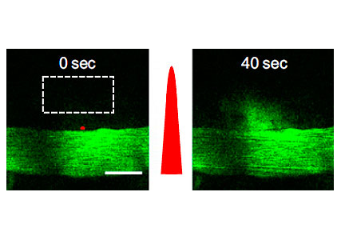
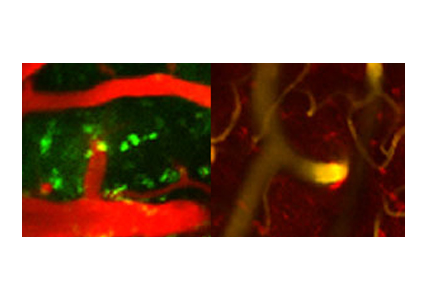

KAIST Top 10
KAIST Top 10
KAIST RESEARCH ACHIEVEMENTS
A Novel Technology for Delivering Drugs to the Brain
Professor (Department of Bio and Brain Engineering) Chulhee CHOI
Summary
Putting an End to Risky Cranial Injection Procedures Professor Chulhee Choi's team is the first in the world to develop a technology that safely delivers a drug in the blood to the brain by light. The technology involves focusing an ultrashort-pulsed laser for a duration as short as one-millionth of a second on the wall of the blood vessels, allowing the passage of macromolecular drugs to the brain without damaging the vessel walls.
R&D Report
We take medication when we suffer from the flu or indigestion. But what happens when our brain is not well? Delivering drugs to the brain is not as simple as it sounds, mostly due to a structure called the blood-brain barrier (BBB). The BBB is a specialized structure that protects the brain, which holds and controls our thoughts and emotions. The barrier can be thought of as a double-edged sword, since it protects the brain under the normal circumstances, but hampers the delivery of drugs. Thus, scientists and doctors have directed tremendous efforts toward developing a technology that delivers drugs to treat brain diseases while preserving normal function. To date, the only means available are risky and, if not, invasive, because it is necessary to drill a hole in the cranium and directly deliver the drugs using a needle,or transform the characteristics of the drug molecules to instill them. Not only are these methods painful and costly, but also there are many aspects of drug delivery processes that require improvements.
Fig 1. Professor Chulhee Choi's research team has developed a way to safely deliver drugs from the bloodstream to the brain using lasers. By briefly stimulating the barrier between the brain and blood vessel, they found a way to allow macromolecules, which cannot move into the brain under normal conditions, to enter the brain.
 Fig 2. Blood (green) passing through a hole in the blood-brain barrier stimulated by laser stimulation.

Implications and Future Prospects
Gaining Passage through the Blood-Brain Barrier Using Ultrashort-Pulsed Lasers In 2011, Professor Chulhee Choi and his team succeeded in developing a novel drug delivery technology that delivers drugs to the brain by using light. By exposing ultrashort-pulsed lasers to a part of the BBB for extremely brief moments, the BBB 'opens up' and allows the passage of drug molecules to a specific part of the brain. Instead of using a continuous wave laser, the team used a pulsed laser that has much higher energy output over short intervals. The ultrashort-pulsed laser that the team used was equipped to emit very high energy during a short duration, 100 femtoseconds (10-13 s).02 Nervous transmission paths reconstructed using 3D imaging; the brain is the most sensitive and complex organ of the body.
 Fig 4. Nervous transmission paths reconstructed using 3D imaging; the brain is the most sensitive and complex organ of the body.
Fig 4. Nervous transmission paths reconstructed using 3D imaging; the brain is the most sensitive and complex organ of the body.
Ultrashort-pulsed lasers that produce high energy instantaneously were originally used in LASIK surgery and processing of metal-like materials where thermal or physical changes are required. In addition, ultrashort-pulsed lasers with relatively lower energy output can only locally transmit energy over a few square micrometers (10-12 m2). Recently, such lasers have been widely applied in bioimaging techniques, because they were found to reduce damage surrounding biological tissues. The team discovered that an ultrashort-pulsed laser could regulate biological functions at higher energy emission levels than energy used in bioimaging: stimulating cells with an ultrashort-pulsed laser for a microsecond (10-6 s) caused changes in the intracellular calcium ion concentration, which is responsible for various cellular functions. Stimulation of the BBB by the laser increases the local calcium level, induces instantaneous contraction of the BBB, and removes the barrier around the blood vessel, allowing the delivery of a drug from the blood vessel to the brain. The research team observed that the BBB opened by laser stimulation recovered to its original state within a few minutes. This means that the laser stimulation does not damage the BBB but rather temporarily changes its structure. This is a major discovery, as it proves the possibility of drug delivery without destroying the function of brain protection.
Research Funding
ㆍ21st Century Frontier Brain Function Utility and Brain Disease Treatment Technology Development Project (from Korean Ministry of Education and Science and Technology)
Publication
ㆍProceedings of the National Academy of Sciences USA (5-Year Impact Factor=10.3) 2011.05.16